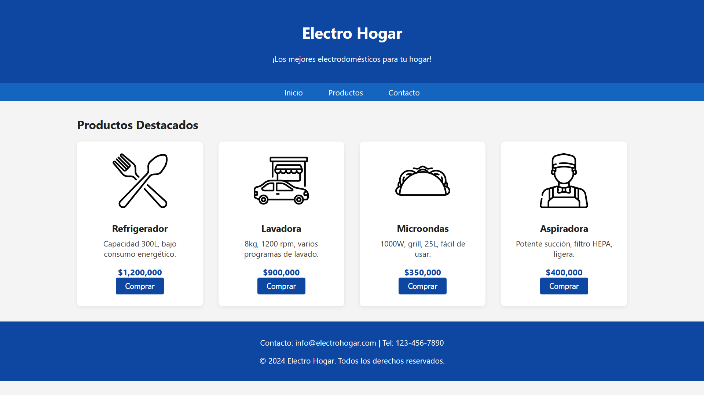
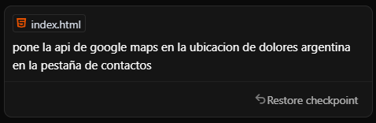
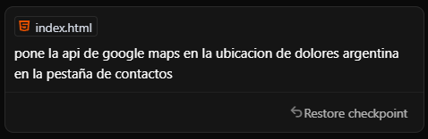
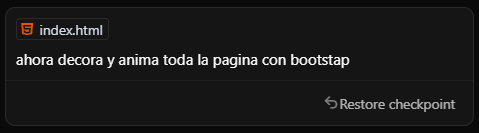
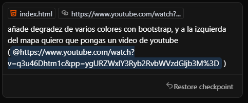
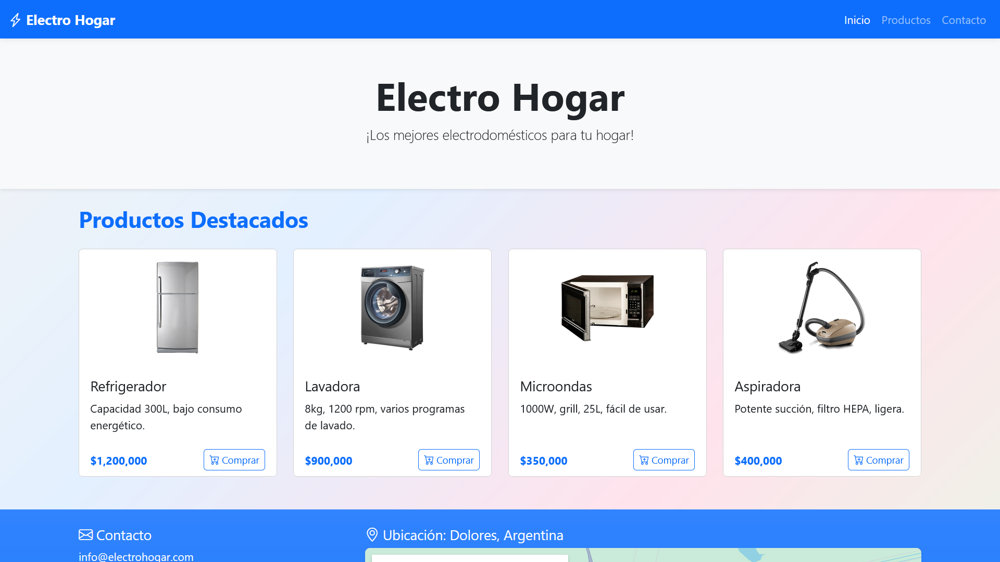
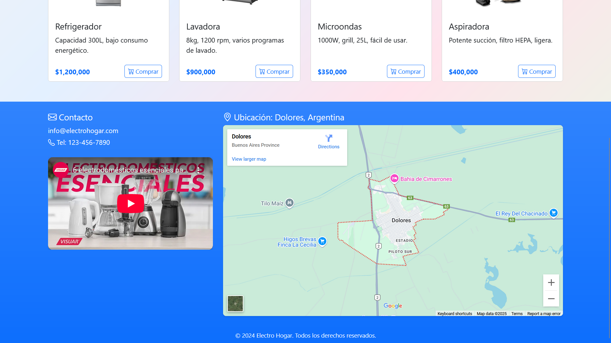

Vibe Coding
Programar con IA
Andres, Alejo, Braian, Camilo y Matias
¿Qué es el Vibe Coding?
Es una forma de programar asistido por inteligencia artificial.
En lugar de escribir todo desde cero, la IA sugiere o genera el código por vos.
Expresas tu creatividad y ideas en texto
No es hacer trampa: es usar una herramienta que potencia tus ideas.
¿Que ventajas tiene el Vibe Coding?
- Ahorra tiempo en tareas repetitivas
- Te sugiere código listo para usar
- Facilita el aprendizaje
- Reduce errores comunes en la programación
- No es necesario tener conocimientos sobre programacion
¿Qué es una Inteligencia Artificial?
Es un sistema creado para imitar la inteligencia humana.
Puede razonar, aprender, tomar decisiones o generar contenido.
Se entrena con datos y patrones para resolver problemas complejos.
IA´s mas comunes
- ChatGPT: Asistente conversacional que responde preguntas, genera código, explica conceptos y ayuda en tiempo real.
- GitHub Copilot: Se integra en editores de código (como VS Code) para sugerir líneas completas de código a medida que escribís.
- Cursor: Un IDE basado en ChatGPT que permite escribir código y dialogar con la IA directamente sobre archivos del proyecto.
Creando algo con Vibe Coding
Vamos a crear un HTML utilizando vibe coding.
Plasmamos nuestra idea en texto

Resultado generado
Modificaciones en la página
 

Más modificaciones
 Resultados finales

